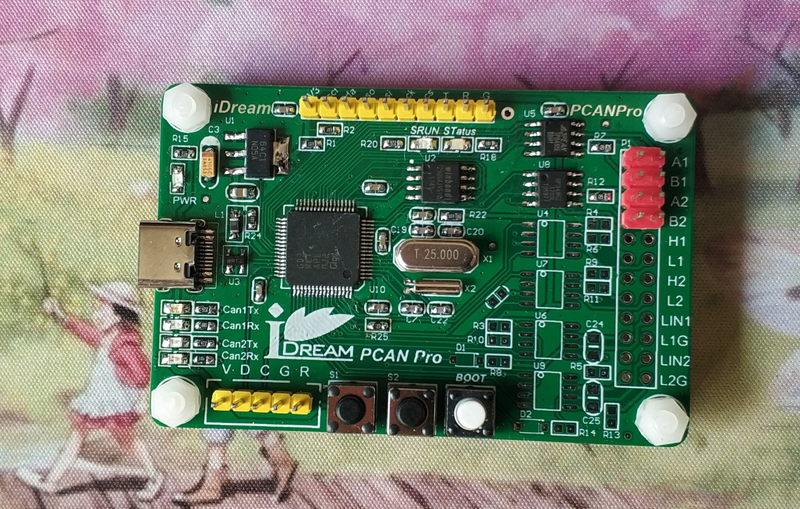

摘掉了CANFD的GD32E505犹如折翼了的天使~光环不再，奈何PCB已做回，好在GD的FAE给力，在芯片价格满天飞的今天提供了10片样片，感动的泪牛满面！纵有千般不爽还是立马搞起！

GD32E505
- 180MHz, Arm Cortex-M33 内核，ARMv8架构。
- SRAM/Flash：80/128，96/256，128/512 KB
- 高速USB，内置PHY，480Mbit/s。
- 两个12bit SAR ADC，2.5MSPS，两个DAC，9个16bit 定时器，一个32bit通用定时器。
- QSPI Flash。
- USART: 高达22.5MBits/s ， 支持IrDA SIR编解码，支持LIN，支持ISO7816-3.
- 96bits Unique ID，位于0x1FFF_F7E8
虽然没了CANFD，但还是亮点满满，尤其是内置高速USB PHY，相比STM32来说诚意满满！STM32貌似只有STM32F7有几款型号内置了高速PHY，蛋疼。
环境搭建
- 先从GD32官网下载所需资源
英文：http://www.gd32mcu.com/en/download/
中文：http://gd32mcu.com/cn/download
选择GD32E5，主要下载以下几个文件：
GD32E505xx_Datasheet_Rev1.2.pdf - 数据手册
GD32E50x_RM_Rev1.2.pdf - 寄存器手册
GD32E50x_AddOn_V1.2.0.zip - 安装后MDK能识别出GD32E5的芯片
GD32E50x_Firmware_Library_V1.1.2.rar - 固件库
GD32E50x_Firmware_Library_User_Guide_Rev1.1.rar - 库函数手册
GD32E50x_Demo_Suites_V1.1.1.rar - Demo板参考例程，Demo板的原理图也藏在这里面
GD32DfuDrivers_V3.6.6.6167.rar - GD32 DFU驱动
GD32All_In_OneProgrammer_V1.2.8.9234.rar - 下载程序
GD32_Dfu_Tool_V3.8.2.9056.rar - DFU上位机程序
GD32_ISP_CLI(Windows)1.0.0.5109.rar - ISP程序
GD_Link_Programmer_V4.3.7.9954.rar - GDLink的上位机下载程序 - MDK - 我最开始用的MDK5.23版本，各种问题，后来果断升级至最新版 5.34版本
GD32的例程使用的是AC6的编译器。 - JLink驱动：JLink_Windows_V696.exe ，这个版本的支持GD32E505器件，老版本的不支持。
USB CDC例程
- 解压GD32E50x_Firmware_Library_V1.1.2.rar
- 打开Examples\USBHS\usb_device\cdc_acm\MDK-ARM工程，编译。
- 选择JLink，连接方式选择SWD，JTAG/SWD都支持，下载即可。
埋坑笔记
- 例程很多，对每一个外设基本上都有相应的例程，蛋疼的是大部分都没工程，只有几个.c文件。在USBHS中有MDK和IAR的工程，所以直接以此工程入手。
- 在MDK5.23版本中，遇到自带的AC6编译时有很多问题，于是从其他高版本的MDK中拷贝出相应的AC6编译链，替换Keil\ARM\ARMCLANG，编译没问题了，在下载选项中没法选择JLink，后来查找到MDK中的描述：https://www.keil.com/support/docs/4053.htm
µVISION DEBUGGER: J-LINK/J-TRACE Debug Support for ARMv8m Architecture
To resolve this issue, open the Keil\Tools.ini file with a text editor and in the section starting with ARMADS search for the debug drivers for Arm v8m architecture and add TDRV4 to the list of supported drivers in CPUDLL3 line.
Tools.ini:
[ARMADS]
CPUDLL0=SARM.DLL(TDRV17,TDRV18,TDRV19) # Drivers for ARM7/9 devices
CPUDLL1=SARMCM3.DLL(TDRV0,TDRV1,TDRV2,TDRV3,TDRV4,TDRV5,TDRV6,… # Drivers for Cortex-M devices
CPUDLL2=SARMCR4.DLL(TDRV4) # Drivers for Cortex-R4 devices
CPUDLL3=SARMV8M.DLL(TDRV2,TDRV4,TDRV13,TDRV14,TDRV15,TDRV16) # Drivers for ARMv8-M devices
…
TDRV3=BIN\CMSIS_AGDI.dll(“CMSIS-DAP Debugger”)
TDRV4=Segger\JL2CM3.dll(“J-LINK / J-TRACE Cortex”)
TDRV5=BIN\DbgFM.DLL(“Models Cortex-M Debugger”)
… - JLink不支持GD32E5的芯片，升级JLink驱动至V696版本即可。Segger的WIKI上还给GD32E507开了个专页，https://wiki.segger.com/GigaDevice_GD32E5
如果使用SEGGER的开发环境，可以下载GigaDevice_GD32E507Z_TestProject_ES_V452b.zip试试。 - 我这边还遇到过无法下载的情况，换了电脑换了MDK534还是不行，后来用ISP工具，通过串口给下载了个程序后就OK了，顺便提一下，USB DFU也不行！
- 程序下载后无限重启，约1S重启了，各种查找才发现原来是看门狗莫宁奇妙的被开启了，真是日了狗！RM上写的默认是关闭的，但是可以通过配置选项字打开，我也不清楚是个例，还是就这么设计的，程序主循环里不断喂狗就行了。
- 能下载能运行了，其他都不是事了，回头慢慢研究吧。